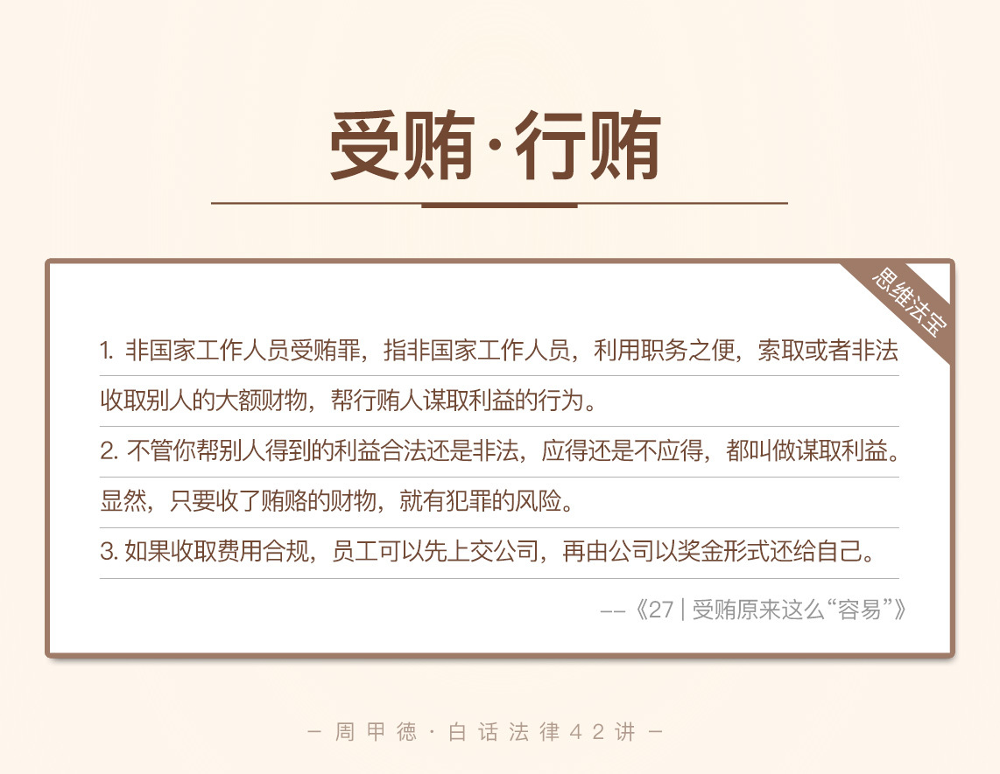

- 00 开篇词 这年头，你真应该懂点法律常识.md.html
- 01 “老周，我想知道” 常见法律认知盲区（一）.md.html
- 02 “老周，我想知道” 律师就在你身边（二）.md.html
- 03 “老周，我想知道” 律师就在你身边（三）.md.html
- 04 “老周，我想知道” 律师就在你身边（四）.md.html
- 05 创业未捷老板跑，社保工资哪里讨？.md.html
- 06 保密还是“卖身”，霸王条款怎么看？.md.html
- 07 编造流言蹭热度？看守所里降温度！.md.html
- 08 合同在手欠款难收，报警有用吗？.md.html
- 09 致创业：谁动了我的股权？.md.html
- 10 又见猝死！工“殇”究竟是不是工伤？.md.html
- 11 期权的“前世今生”.md.html
- 12 裁员面前，你能做的还有什么？.md.html
- 13 抄袭、盗图为什么做不得？.md.html
- 14 加班、工资、休假，你知道多少？.md.html
- 15 受贿原来这么“容易”.md.html
- 16 今天你用“VPN”了吗？.md.html
- 17 漏洞在眼前，可以悄悄破解吗？.md.html
- 18 “爬虫”真的合法吗？.md.html
- 19 非法集资到底是个啥？.md.html
- 20 黄色网站？不仅仅是“黄色”罪名.md.html
- 21 谁修改了我的积分资产？.md.html
- 22 外挂真能大吉大利吗？.md.html
- 23 如何看待“从删库到跑路”？.md.html
- 24 “伪基站”是你的避风港吗？.md.html
- 25 “网络诈骗”真的离你很远吗？.md.html
- 26 智斗中介：“北上广”租房图鉴.md.html
- 27 买买买！买房的“避坑”指南.md.html
- 28 闪婚又闪离，彩礼怎么理？.md.html
- 29 离婚还想和平？你要这么做.md.html
- 30 遗产继承的爱恨情仇.md.html
- 31 骗术升级？假结婚、假离婚的那些事儿.md.html
- 32 孩子学校受伤，谁之过？.md.html
- 33 如何让欠债还钱真正“天经地义”？.md.html
- 34 从透支到盗刷：人人须知的银行卡纠纷.md.html
- 35 远离“套路贷”的套路大全.md.html
- 36 危险！酒驾为什么被罚那么重？.md.html
- 37 老人倒地，“扶”“不服”？.md.html
- 38 “能动手就别吵吵”，代价你真的知道吗？.md.html
- 39 发生交通事故，如何处理？.md.html
- 40 交通事故综合法宝.md.html
- 41 婚姻家庭综合法宝.md.html
- 42 买卖房屋综合法宝.md.html
- 一键直达 法律专栏“食用”指南.md.html
- 加餐 “新冠肺炎”影响下，17个常见法律问题解答.md.html
- 结束语 法律，不会终止的篇章.md.html
- 捐赠
15 受贿原来这么“容易”
贪污受贿，这种说法你肯定不会陌生。两个词总是相伴出现，事实上是两类不同的罪名。前面我们讲了跟贪污相关的贪污罪、非法侵占罪，今天就来接着说说受贿。
不要以为受贿只是当官的需要担心的事情。事实上，受贿离我们生活非常近，因为还有一个罪名，叫作“非国家工作人员受贿罪”。犯罪门槛有多低呢？我们可以先看这么一个例子。
老张是某大型电商公司的仓库管理部副经理，主要负责公司在北京市场大货仓承运商的对外招标。说到招标，你可能会心一笑，秒懂其中的门路。
老张也没能抵挡得了这份诱惑，一次招标活动上，他分别收了三家公司孝敬的20000、20000和5000元。后来，由于对结果不满意，老张的行为被其中一个贿赂的人揭发，还告上了法庭。
老张的行为其实并不少见，甚至不少人习以为常，觉得没什么。那么，法律究竟是怎么规定的呢？老张到底会受到什么惩罚呢？
老规矩，我们先来了解一些基本的法律知识。
法律知识
非国家工作人员受贿罪
在过去，这个罪一直叫作“公司、企业人员受贿罪”，后来修改成了“非国家工作人员受贿罪”。名称上的变动，可以看出，新罪名针对的对象更广，除了公司、企业的工作人员，其他单位的工作人员也都包括了进来。
非国家工作人员受贿罪，指非国有公司、国有企业、事业单位或其他组织的工作人员，利用职务之便，索取或者非法收取别人的大额财物，帮贿赂的人谋取利益的行为。
我们熟悉的受贿罪，其实更多是指国家工作人员的受贿行为。当然，国家工作人员指的就是国家机关的公务员，国有公司工作人员，国企和事业单位等国家相关组织的工作人员。
继续说回更贴近我们的，非国家工作人员受贿罪。弄清楚这个罪名，需要我们了解它的几点要素。
这个罪名的适用对象，也就是我们刚刚一直强调的，非国有公司、国企企业等单位的工作人员。
利用职务之便，是指利用自已岗位上的组织、领导、监管、主管、负责等工作便利。
索取或非法收取财物，是指主动索要，或者接受别人主动送的财物。
为别人谋取利益，这里要注意，不管你帮别人得到的利益合法还是非法，应得还是不应得，都叫做谋取利益。显然，只要收了贿赂的财物，就有犯罪的风险。
大额财物，是指数额比较大的程度，会构成受贿罪。根据最新的司法解释，一般情况下，数额达到6万，就可以被追究刑事责任。
事实上，我们平常总听说的什么回扣、信息费、顾问费、劳务费、辛苦费、茶水费、好处费、手续费等等，不管披着什么外衣，只要是不正当竞争的费用，都有受贿的风险。一旦符合了其他条件，都会构成非国家工作人员受贿罪。
不过，你也不必对此太过惊慌，这里我也总结了几种合法行为，不构成犯罪。
在法律、政策允许范围内，通过劳动获得合理报酬的，不构成犯罪。
接受亲朋好友的一般礼品，没有利用职务便利为他们谋利的，不构成犯罪。
正常的市场交易中，获得符合“反不正当竞争“规定的折扣、佣金的等业务行为，不构成犯罪。
对非国家工作人员行贿罪
说完受贿的行为，相对应的自然就是行贿这个行为。对非国家工作人员行贿罪，指的就是为了谋取不正当的利益，给非国家工作人员大额财物的行为。
这个罪名的注意点，跟非国家工作人员受贿罪基本一致，我就不再过多强调。
当然，对于国家工作人员来说，索取或收取钱财，为他人谋利，叫作受贿罪；而有人为了谋利，向国家工作人员行贿的，就是行贿罪。
情景分析
了解了这些，我们再来看老张的案例。
老张利用职务上的便利，收了三个投标公司的钱，为他人谋取利益，显然已经是非国家工作人员受贿行为。只不过，他受贿的额度只有4.5万元，如果根据最新司法解释来判案，这笔钱不到6万元，不构成刑事犯罪。
当然，被揭发后，老张避免不了要退还所有的钱财，甚至可能会被公司开除。
刚刚是我们根据最新的司法解释做出的判断。真实的老张，其实就没这么幸运了。老张的故事其实是个真实的案例，发生在2013年。而新司法解释对贿赂数额的调整，是在2016年4月18日以后才施行的。所以倒霉的老张，就这么因为4.5万元，被判了非国家工作人员受贿罪的缓刑。
其实，除了最常见的招标隐患，我们互联网公司也有不少这样的例子。比如这两个真实的新闻。
腾讯某公司员工，收取16万元红包，在发布的新闻稿件前，加了某博彩公司的名字，最终最判刑。
某电商平台程序员，收取一家店铺的10万元礼金，在双十一活动中优先推送这家店铺，最终被揭发判刑。
显然，这两个例子，虽然看似举手之劳的行为，确实为行贿者带来不少好处，是实打实的受贿行为。而且，他们受贿的数额都在6万元以上，很有可能会面临五年以下有期徒刑或者拘役。
思维法宝
作为律师，我清楚地知道，常见的不一定合法，存在的也不一定正规。商务活动中，各种活动经费可能司空见惯，成为一种行业潜规则。或者就像最后提到的两个新闻，举手之劳就能获利，似乎天衣无缝。
就像安全生产上很著名的海恩法则，每一起犯罪案件的后面，都有几百个个违法行为，和无数个隐患。杜绝隐患，拒绝违法行为，才是远离犯罪最明智的做法。

最后，我来总结一下今天的内容。今天主要讲了受贿罪和行贿罪，非国家工作人员受贿罪和行贿罪。你一定要记住，利用职务便利为他人谋取利益的行为，不管这个利益是合法利益还是非法利益，也不管利益是否已经到手。只要你收了这笔钱，钱数比较大，可能就是刑事犯罪了。
对于员工来说，如果收取的费用符合规定，可以先把这笔钱上交公司，再由公司以奖金形式还给自己。这样，就不存在受贿的风险。
而对于公司来说，应该建立严格的财务制度，合理的奖励制度，并且严格杜绝受贿、索贿的行为。如果确实有必要奖励某些部门或者员工，可以抛开职务属性，跟被奖励者签订正式合同，再进行财务报账。
今天的内容主要是这些。对于不经意的受贿、行贿，你有哪些看法或者经历吗？你有相关方面的困惑和问题吗？欢迎留言和我分享，也欢迎你把这篇文章分享给身边的亲朋好友。受贿容易，远离却需要我们格外注意。
© 2019 - 2023 Liangliang Lee. Powered by gin and hexo-theme-book.